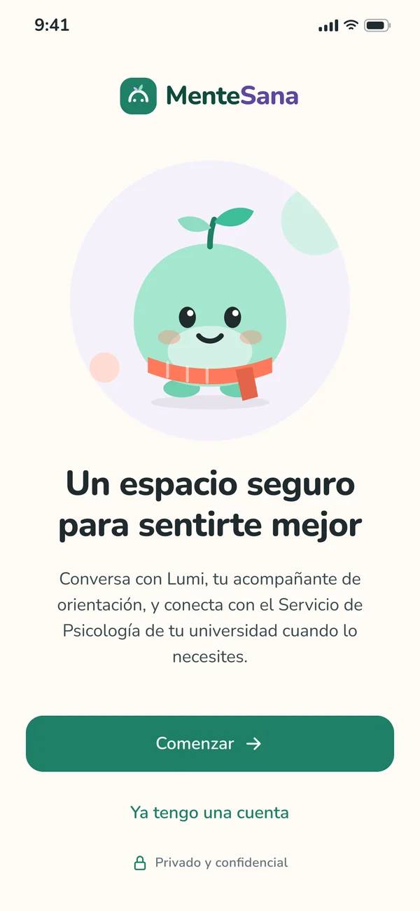

Lumi, su acompañante
Un espacio confidencial para hablar cuando lo necesita, sin cita y sin juicios.
- Conversa a cualquier hora
- Pasos pequeños: respirar, ordenar la semana
- Llega a psicología cuando lo decide
MenteSana es una plataforma para universidades. Su acompañante con IA, Lumi, escucha a los estudiantes a cualquier hora y los lleva al servicio de psicología de su propia universidad.
Las universidades tienen servicios de psicología. Pero entre lo que siente un estudiante y la cita con un profesional hay un camino largo, con estigma, poco tiempo y procesos que no se entienden.
universitarios llegó al servicio de psicología de su universidad.
no recibió atención psicológica de ningún tipo en el último semestre.
reportó ansiedad severa o extremadamente severa.
Consorcio de Universidades (2025), II Estudio de Salud Mental en Universitarios: 6 978 estudiantes de tres universidades privadas de Lima.
«Me sale como que vuelve a intentar más tarde.»
El servicio existe. Lo que falla es el camino para llegar.
MenteSana no reemplaza al psicólogo: conecta al estudiante con el servicio que su universidad ya tiene.
Un espacio confidencial para hablar cuando lo necesita, sin cita y sin juicios.
Recibe a quien decidió ir, con un resumen que el propio estudiante aprobó.
Cifras de grupo para saber cuándo y dónde reforzar el apoyo, sin ver a ninguna persona.
Pantallas del prototipo navegable (versión 2), diseñado y probado con estudiantes.

El estudiante entra con su correo institucional. Elige cómo se ve Lumi y desde el primer mensaje sabe que habla con una IA que orienta.

Sin diagnosticar ni poner etiquetas, Lumi ayuda a ordenar lo que siente y sugiere pasos concretos.

Cuando hace falta, Lumi muestra los canales oficiales de su universidad. La decisión es siempre del estudiante: puede responder «Ahora no».
Estudiantes activos, registros de ánimo, derivaciones y días hasta la primera cita, por semana y por facultad.

Panel del prototipo con datos de ejemplo.
Diseñamos MenteSana siguiendo las recomendaciones internacionales sobre IA en salud mental y la ley peruana de datos personales.
Lumi orienta y deriva. Lo dice desde el primer mensaje y nunca se presenta como profesional.
Si aparece un riesgo para la vida, Lumi muestra la Línea 113, opción 5, y el SAMU 106. El protocolo se elabora con psicólogos colegiados.
La universidad no ve conversaciones ni identidades. Los datos no se venden ni se usan para entrenar a la IA.
Permisos separados y revocables, con casillas que nunca vienen marcadas. La derivación es siempre voluntaria.
Seis semanas de trabajo de campo en el Científica Sprint 2026, de septiembre a noviembre.
entrevistas a estudiantes universitarios
confirmaron el problema
versiones del prototipo navegable
mejoras tras probarlo con 5 estudiantes
«Si le cuento a los demás, sería como darle mi carga.»
El reglamento de la Ley de Salud Mental pide a las instituciones educativas políticas y programas de salud mental, y el MINEDU tiene lineamientos que incluyen la atención a distancia.
La usan a diario para estudiar. Un acompañante con reglas claras y conectado a profesionales hace que dar el primer paso sea natural.
Cuatro estudiantes de la Universidad Científica del Sur, de ingeniería industrial, de software y de sistemas.

Líder del equipo y negocio
Ingeniería Industrial

Investigación
Ingeniería de Software

Entrevistas y validación
Ingeniería de Software

Diseño del prototipo
Ingeniería de Sistemas
Conectar la IA de Lumi con reglas de seguridad y un protocolo de crisis hecho con psicólogos colegiados.
Una prueba con estudiantes reales en una universidad, midiendo los días hasta la primera cita.
Universidades, psicólogos e instituciones que quieran construir esto con nosotros.
No. Lumi es un acompañante con IA que orienta y deriva. No diagnostica ni da tratamiento: su trabajo es que el estudiante llegue al servicio de psicología de su universidad cuando lo necesite.
La universidad contrata una licencia. Para el estudiante es gratis, como la biblioteca o el correo institucional.
Solo cifras de grupo y anónimas: ánimo por semana y por facultad, derivaciones y días hasta la primera cita. Nunca conversaciones ni nombres, y nunca grupos de menos de 20 estudiantes.
Lumi deja todo lo demás y muestra de inmediato la Línea 113, opción 5, y el SAMU 106. El protocolo de crisis se elabora con psicólogos colegiados.
Tenemos un prototipo navegable en su segunda versión, probado con estudiantes. La inteligencia artificial aún no está conectada y todavía no está disponible para el público.
Este correo no atiende emergencias.